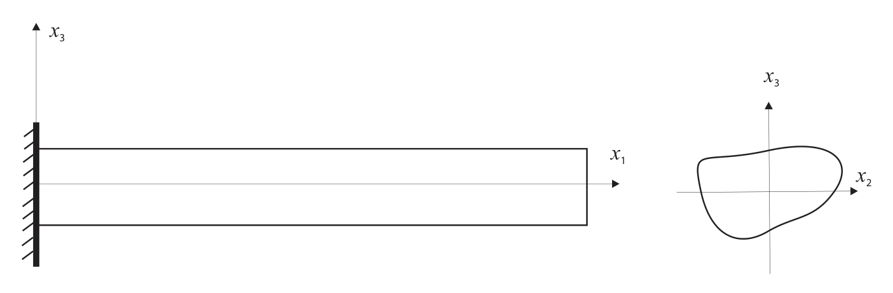

Conventions#
To understand the inputs and interpret outputs of the program correctly, we need to explain some conventions used by GEBT.
Firstly, GEBT uses a right-hand coordinate system, the beam coordinate system denoted as \(x _ { 1 } , x _ { 2 }\) and \(x _ { 3 } .\) , where \(x _ { 1 }\) is along the beam axis and \(x _ { 2 }\) and \(x _ { 3 }\) are the local Cartesian coordinates of the cross section, see Figure 1 for a beam with an arbitrary cross section. Unit vectors \(\mathbf { b } _ { i }\) are the corresponding base vectors. The cross-sectional coordinates \(( x _ { 2 }\) and \(x _ { 3 } )\) are only needed for the purpose to define its orientation. It is noted that the beam coordinate system remains the same as the undeformed beam coordinate system defined in Ref. [5] for straight beam members. For curved member, the undeformed beam coordinate system is changing along the beam axis and the user needs to provide the undeformed beam coordinate system at the starting point of the beam member and the changing undeformed beam coordinate system along with the beam axis will be calculated automatically by the code. Usually, for a beam assembly, we define a global coordinate system, say with the triad \({ \bf a } _ { i } ,\) then the orientation of a beam member can relate to the global coordinate system using a direction cosine matrix

Figure 1 VABS beam coordinate system.#
Secondly, GEBT uses two points to specify each member with \(x _ { 1 }\) of the member pointing to the second point. For dynamic analysis, there are 18 values for each element within a member arranged as
Thirdly, GEBT assumes that the cross-sectional properties have already been calculated by VABS and given in the form of a flexibility matrices and mass matrix. The flexibility matrix is defined according to the following equation
where \(\gamma _ { 1 1 }\) is the beam axial stretching strain measure, \(2 \gamma _ { 1 2 }\) and \(2 \gamma _ { 1 3 }\) are the engineering transverse shear strains along \(x _ { 2 }\) and \(x _ { 3 }\) respectively, \(\kappa _ { 1 }\) is the twist measure, and \(\kappa _ { 2 }\) and \(\kappa _ { 3 }\) are the curvature measures around \(x _ { 2 }\) and \(x _ { 3 }\) respectively. Note that any of the values in the flexibility matrix \(( S _ { i j } )\) can be zero to eliminate any of the deformation mechanism which the user believes to be negligible. For example, to analyze a pure bending around \(x _ { 2 }\) , one can set \(S _ { 5 5 }\) to be the bending flexibility and other terms to be zeroes.
The elements of the mass matrix are arranged as
where \(\mu\) is mass per unit length, \(( x _ { m 2 } , x _ { m 3 } )\) is the location of mass center, \(i _ { 2 2 }\) is the mass moment of inertia about \(x _ { 2 }\) axis, i33 is the mass moment of inertia about \(x _ { 3 }\) axis, i23 is the product of inertia.
GEBT allows users to use various kinds of units. However, it is necessary to be absolutely consistent in the choice of units to avoid errors. Particularly, users must never use the pound as a unit of mass to avoid confusion. When pounds are used for force and feet for length, the unit of mass must be the s \({ \mathrm { l u g } } = { \mathrm { l b } } { \mathrm { - s e c } } ^ { 2 } / { \mathrm { f t } } ;\) if inches are used for length along with pounds for force, then the unit of mass must be \(\scriptstyle \mathrm { l b - s e c ^ { 2 } / i n }\)